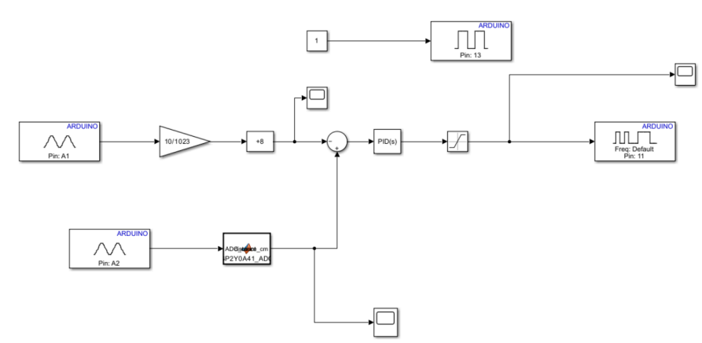
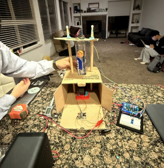

Personal Project · Model-Based Control (Simulink + Arduino)
Tools: Simulink · MATLAB · Arduino IDE · PID control · IR distance sensor · PWM blower · potentiometer
What?
This project is a closed-loop ball levitation system that uses an
IR distance sensor and PWM-controlled blower
to hold a ping-pong ball at a set height inside a tube. Built using
Simulink model-based design with real-time embedded deployment
to an Arduino for dynamic airflow control.

Simulink Model
How?
Modeling: Developed a Simulink control converting nonlinear IR sensor voltage into position feedback for closed-loop regulation.
Control: Implemented a PID based controller to modulate the wind blower PWM and stabilize the ball at various setpoints.
Integration: Interfaced the IR sensor, motor driver, and blower through an Arduino, deploying the Simulink model for real-time execution.
Testing: Tuned gains, filtered noise, and refined logic to maintain stable levitation.
Diagram Setup
Top strand: Sends a constant value of 1 to the digital pin to keep the blower motor activated.
Middle strand: Converts the potentiometer's height input into a velocity command with an 8 cm added offset for sensor correction.
Bottom strand: Uses a MATLAB function to turn the IR sensor voltage into a distance reading.
Sum block: Compares setpoint and sensor distance to generate control error for airflow.
Results?
Achieved stable levitation across multiple setpoints with real-time control.
Validated distance conversion and reliable sensor feedback.
Demonstrated effective closed-loop airflow regulation using Simulink-deployed embedded control.
Worked on PID tuning, sensor integration, and model-driven development.

Test #1: Reference pt. set at 13 cm
Analysis
The scope results show the system's behavior when the potentiometer was
adjusted to a 13 cm reference height. The
left graph confirms the setpoint transition as the
potentiometer moves and adjusts to the desired reference. The
middle graph shows the IR sensor tracking the
ball's real-time position, hovering near the 13 cm level
with natural fluctuation from airflow dynamics. The right graph
represents Pulse Width Modulation (PWM) output, which remains
steady, indicating that the system reached a point of stabilization. Together,
the graphs demonstrate that the system was consistent for the intended
application.